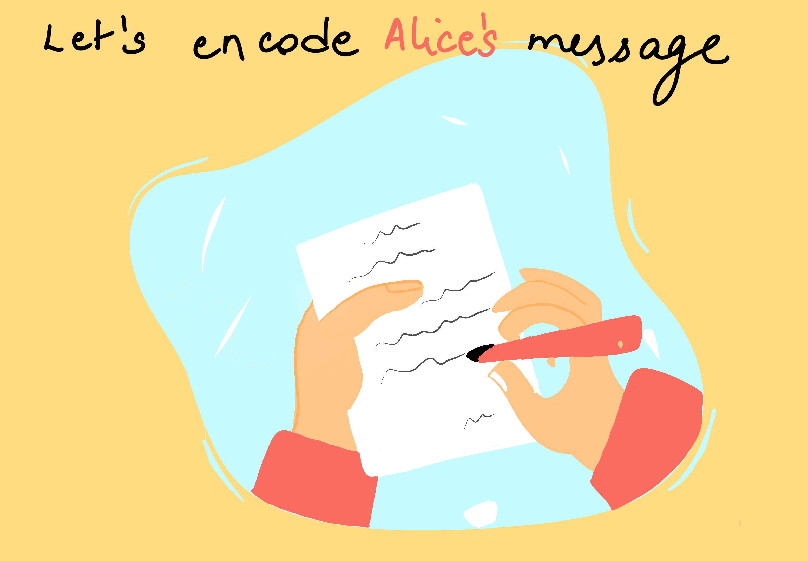
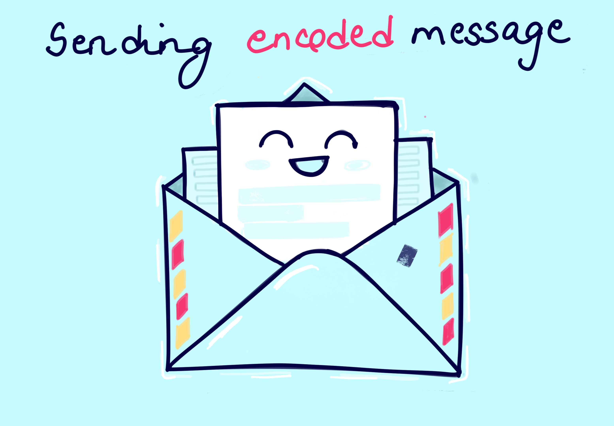
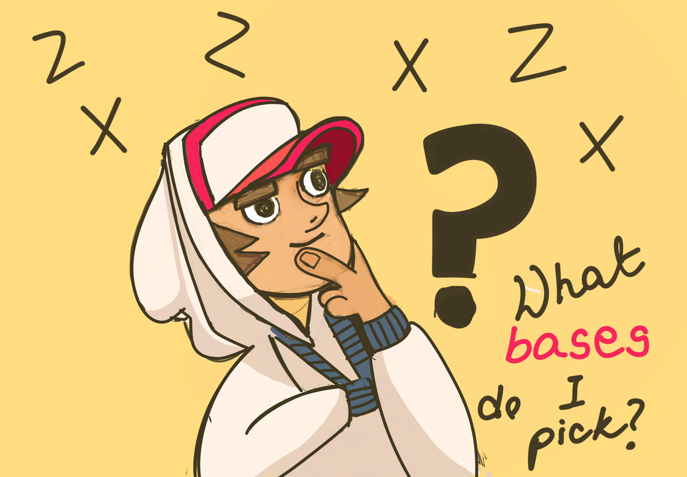

(remaining players will be computer)
QUANTUM KEY DISTRIBUTION PROTOCOL
Alice wants to send a secret key to
Bob over a quantum channel.
Eve is lurking and note any eavesdropping
necessarily disturbs the quantum states and can be detected (since measurement collapses the state).
(remaining players will be computer)

Prepare Alice's quantum states
Alice prepares qubits by choosing a bit value (0 or 1) and a basis (Z = rectilinear ✚, X = diagonal ✕) for each qubit.
ALICE's QUANTUM STATES (auto-computed)

Eve intercepts each qubit and measures it in her chosen basis before re-sending to Bob. If her basis doesn't match Alice's, she collapses the quantum state — introducing detectable errors.

BOB MEASURES QUBITS
Bob receives the qubits (possibly disturbed by Eve) and measures each in a randomly chosen basis.
He doesn't know Alice's bases yet.
Alice and Bob compare their bases only (not bits) over a public channel. They keep only the bits where their bases matched. This is the sifted key.
| # | Alice Bit | Alice Basis | Alice State | Eve Basis | Eve Measured | Bob Basis | Bob Measured | Match? | Key Bit |
|---|